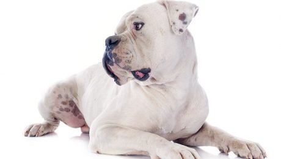
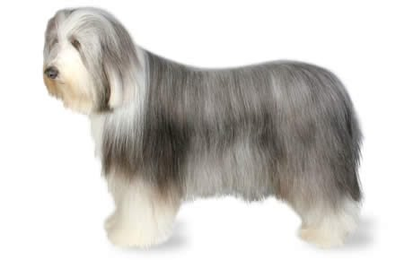

SUNRISE ANIMAL SHELTER
SAS is the only animal welfare charity in Kenya protecting animals from neglect and abuse. We rely on the help of volunteers, voluntary fundraising and donations to carry out our important work, so your support in invaluable to us!
Since the society’s formation one hundred years ago, SAS has grown and is well known for animal rescue and rehabilitation. With a focus on domestic animals, SAS is currently home to around 150 dogs, 90 cats as well as donkeys and goats at any one time. We rehome around 45-50 dogs and 20 cats every month.
We are currently taking care of:

Small, smart, and energetic, the Alaskan Klee Kai is a relatively new breed that looks like a smaller version of the Siberian Husky. Even the name “Klee Kai” comes from an Inuit term meaning “small dog.”
While Alaskan Klee Kais may resemble larger Husky breeds, they have some key differences, especially when it comes to temperament, that distinguish it from its ancestor working class dogs of the north. This breed is more suited to the life of a companion; although, the Alaskan Klee Kai shares the high energy of the Husky and demands plenty of exercise.
They also tend to be shy around strangers and are prone to expressing their emotions with whines and barks. An inexperienced pet parent would find it difficult to take on the challenge of caring for an Alaskan Klee Kai. But for an adopter who keeps up with training and physical activity, this breed is sweet, loyal, and happy to shower loved ones with affection.

The American Bulldog is stocky and muscular, but also agile and built for chasing down stray cattle and helping with farm work. In fact, some are known to jump six feet or more into the air.
American Bulldogs are intelligent and affectionate, which makes them great, protective family dogs; although, they have high exercise needs and require an experienced, active pet parent. They can vary in appearance, as there are multiple types, including the Bully or Classic type, also known as the Johnson type, the Standard or Performance type, also called the Scott type, and hybrids of the two.
With patient training and care, American Bulldogs can make loving family companions. If you’re looking for a loving, energetic best buddy, then this may be the dog for you!

The Bearded Collie dog breed was developed in Scotland to herd sheep and cattle in any weather or terrain. They function today as excellent family companions, show dogs, working sheepdogs, or even all three.
Even though these are purebred dogs, you may find them in the care of shelters or rescue groups. Remember to adopt! Don’t shop if you want to bring a dog home.